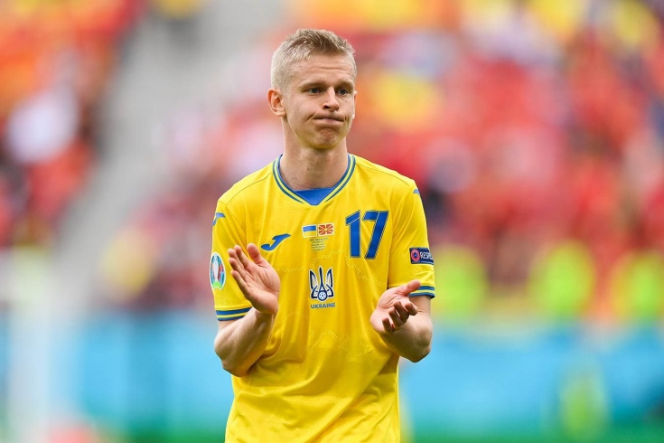
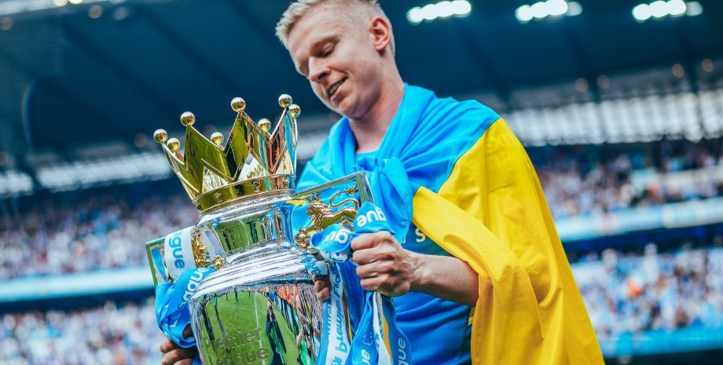

Клубна кар'єра
Ранні роки
Народився 15 грудня 1996 року в місті Радомишлі на Житомирщині. Футбол був однією з улюблених забав юного Олександра. Його батько Володимир Зінченко, у минулому футболіст, став першим учителем сина та передав йому деякі секрети спортивної майстерності. 1 вересня 2004 у віці 7 років Олександра зарахували в Радомишльську ДЮСШ, він почав виступати за місцеву дитячу команду Радомишльської ДЮСШ «Карпатія», де відрізнявся дуже видовищною та результативною грою в атаці.
«Шахтар»
У 16 років Зінченко переїхав до Донецька, де продовжив свою молодіжну практику в місцевому «Шахтарі». Там він став капітаном команди у віковій категорії до 19 років. Саме виступами за молодіжну команду донеччан молоде дарування звернув на себе увагу. У 2013 році, у першому сезоні Юнацької ліги УЄФА молодий гравець записав на свій рахунок гол у грі з англійським «Манчестер Юнайтед»[2]. Всього в Юнацькій лізі за склад гірників відіграв сім поєдинків. 2014 року гравцем цікавився російський «Рубін», одначе команда не змогла дійти згоди з агентами гравця.
«Манчестер Сіті»
4 липня 2016 підписав контракт на 5 років з англійським «Манчестер Сіті»[4]. Дебютував у товариському матчі проти «Баварії», вийшовши з перших хвилин[5]. Улітку 2016 перейшов на правах оренди до нідерландського ПСВ, за який зіграв у 12 матчах і віддав 3 гольові передачі. 25 лютого 2017 Зінченко разом з «Манчестер Сіті» став володарем Кубка Футбольної ліги 2017/18. Після повернення до «Манчестер Сіті» ходило багато чуток про новий орендний перехід Олександра. Серед можливих клубів в основному фігурували «Фенербахче» та «Наполі». Але головний тренер Жузеп Гвардіола вирішив залишити молодого українця в стані містян. Олександр Зінченко дебютував у складі «Манчестер Сіті» у матчі Прем'єр-ліги Англії 14 грудня 2017 року. 21-річний хавбек вийшов на поле на 72-й хвилині гри 17-го туру англійської прем'єр-ліги проти «Суонсі Сіті» (4:0). Гвардіола випустив українця на позицію лівого захисника: за майже 20 хвилин на полі Зінченко був доволі активним та добре вписався в командні дії. Гвардіола про дебют Зінченка: «Зінченко, безперечно, талановитий гравець. Те, як він грає, які рішення приймає — все чудово. Сподіваюся що Олександр як молодий футболіст допоможе нам у майбутньому. Він залишиться з нами на весь сезон, оскільки у мене є відчуття, що ми будемо його використовувати в подальших поєдинках. «В 1/2 фіналу Кубку ліги 2018/19 проти «Бертона» на 37-ій хвилині забив перший гол у футболці «містян» ударом дугою[6]. 10 лютого 2019 в матчі 26 туру Прем'єр-ліги проти «Челсі» відзначився двома гольовими передачами, віддавши на 13-ій хвилині Агуеро, і на 80-ій Стерлінгу[7][8]. Також у сезоні став володарем Кубка англійської ліги, ставши найкращим гравцем матчу проти «Челсі» 0:0 (4:3 по пенальті) за версією Whoscored[9][10]. 29 травня 2021 року став третім в історії українцем, який зіграв у фіналі Ліги Чемпіонів УЄФА.
Статистика Олександра Зінченка
В цілому Олександр Зінченко провів 118 матчів, включаючи виступи за національну збірну України. Сумарно, за станом на 2019 й рік, Зінченко забив за свою кар'єру п'ять голів. З Олександром Зінченком в основному складі, клуб "Манчестер Сіті" двічі ставав чемпіоном Великобританії, двічі брав Кубок футбольної ліги і один раз - Кубок Англії.
Досягнення
- Найкращий гравець місяця в «Уфі»: 2015 (березень), 2015 (липень).
- Потрапив у список 10 найкращих футболістів Євро-2015 серед збірних до 19 років.
- Наймолодший гравець, який відзначився голом за збірну України.
- Наймолодший футболіст, який грав за збірну України на великих міжнародних турнірах.
- Автор найдовшої серії з перемог з початку кар'єри гравця в історії англійської Прем'єр-ліги: 13 матчів[19].
- Автор рекордної серії з перемог у матчах, в яких брав участь, в історії англійської Прем'єр-ліги (разом з Давідом Сільвою): 23 матчі[20].
- Найкращий гравець «Манчестер Сіті» у лютому 2019 року за версією вболівальників.